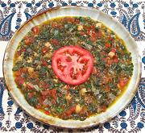

|
Purslane StewPalestinian Gaza - Rijliya / Tabeekh Baqla | ||||
| Serves: Effort: Sched: DoAhead: |
2 main *** 1-1/4 hrs Yes |
A delicious and very versatile dish. It can be a vegetarian main dish for 2, a side dish for 4, or a warm appetizer for 5. By adding some meat stock and cubes of meat it can be a non-vegetarian main dish for 4. | |||
|
|
1 14 5 2 1/4 5 1-1/2 1/4 3/4 ------- ar ar |
# oz oz cl c oz T t t --- |
Purslane (1) Tomatoes Onion Garlic Cilantro Chickpeas, canned Olive Oil ExtV. Chili Flake (2) Salt -- Serve with Flat Bread Olives |
Prep: - (45 min)
|
mmv_pursl1 190518 gk185 - www.clovegarden.com
©Andrew Grygus - agryg@clovegarden.com - Linking to
and non-commercial use of this page permitted